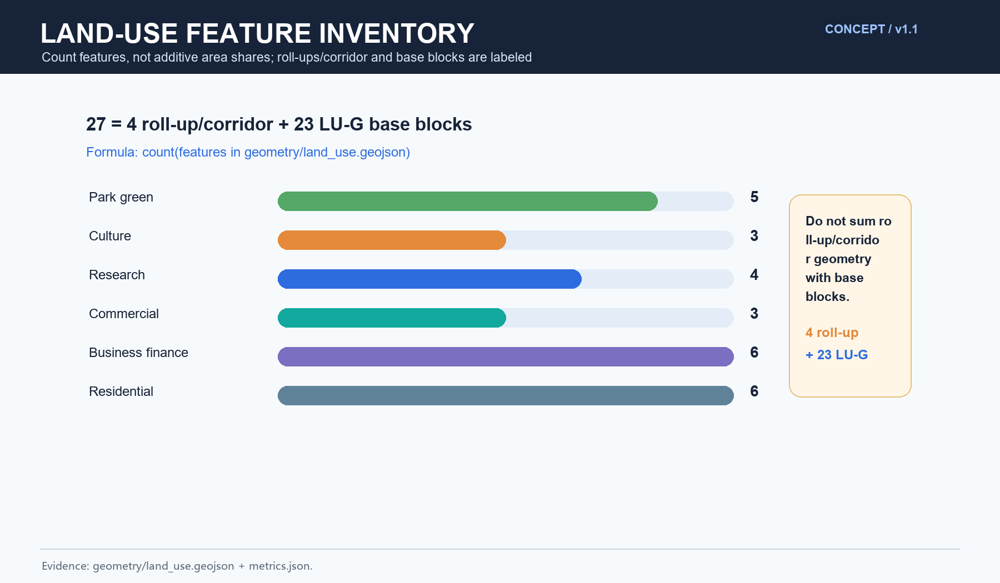

27land-use features
3ordered concept nodes
5taskbook functions
5implementation evidence rows
Taskbook functions are not the same as spatial functions.
Required content sections
Overall map总览地图
Three-level scope三层范围
Key areas重点区域
Land-use zones用地分区
Slow mobility交通慢行
Blue-green public space蓝绿公共空间
Buildings建筑
Renewal projects更新项目
AI scenariosAI 场景
Core metrics核心指标
Task coverage任务覆盖
Self-check status自检状态
Sources来源
Assumptions假设
Known geometry metrics
11412825.386site_area_sqm
1324403.208green_space_area_sqm
36150.0public_space_area_sqm
111600.0building_footprint_area_sqm
0.116045green_ratio
0.003167public_space_ratio
10154.351road_network_length_m
3key_area_count
27land_use_zone_count
12building_unit_count
3landmark_count
8scenario_node_count
3industry_test_scenario_count
5persona_count
4global_case_count
3phase_count
3annual_program_count
Taskbook function → spatial translation
| Taskbook function | Spatial translation | Area/node | Agent/scenario evidence |
|---|---|---|---|
| Full-stack AI autonomous innovation system | Full-stack test and factor-coordination corridor | Zhongzhiyuan / Green-Link Ring | agent.1/2 · S-06/S-08 |
| World-class AI innovation ecosystem | International-facing exchange interface | Beijing AI Origin Community / Weave-Core Court | agent.2/5/6 · S-02/S-09 |
| New paradigm of AI+ scenario enablement | Open scenario and public-experience belt | Xiaoyuehe wing / all nodes | agent.3/4 · S-03/S-04/S-07 |
| Intelligent AI-vital city | 15-minute service and blue-green mobility network | Weave-Core Court / two wings | agent.3/4 · S-01/S-05 |
| Global voice in AI governance | Anonymous aggregation—human review—public correction | Overview Hub / belt-wide | agent.1/3/6 · S-05/T-02 |
Single north-to-south node sequence
1 north
Green-Link Ring
KEY-ZHON / PS-LM00Blue-green transfer + full-stack test
2 middle
Weave-Core Court
KEY-BEIJ / PS-LM01Ecosystem exchange + community service
3 south
Overview Hub
KEY-DAZH / PS-LM02Governance review + public response
GeoJSON uses north_south_order and related_concept_node_id.
27-feature land-use inventory
27 features = 4 roll-up/corridor + 23 LU-G base blocks; do not sum their areas.

Implementation baselines, thresholds, roles and exits
| ID | Target | Roles | Exit condition |
|---|---|---|---|
| E-01 | Continuity ≥90%; accessibility 100% | agent.3/4; operator; community/accessibility review | Two windows below target or unresolved safety event |
| E-02 | Wait ≤15 min; satisfaction ≥80%; close ≤30 days | agent.2/3; operator; human reviewer | Two cycles below target or unresolved complaint |
| E-03 | Human sign-off 100%; response ≤30 days; zero identifiable data | agent.1/6; data-protection/professional review | Any identifiable data or unsigned automated decision |
| E-04 | Five complete traceable rows | agent.1 lead; agents.2–6; project sign-off | Broken traceability |
| E-05 | 27 = 4 roll-up/corridor + 23 LU-G | agent.1/2; planning review | Changed count without synchronized outputs |
Evidence links
English proposal · metrics.json · land_use.geojson · compliance_matrix.json · design_depth_matrix.json